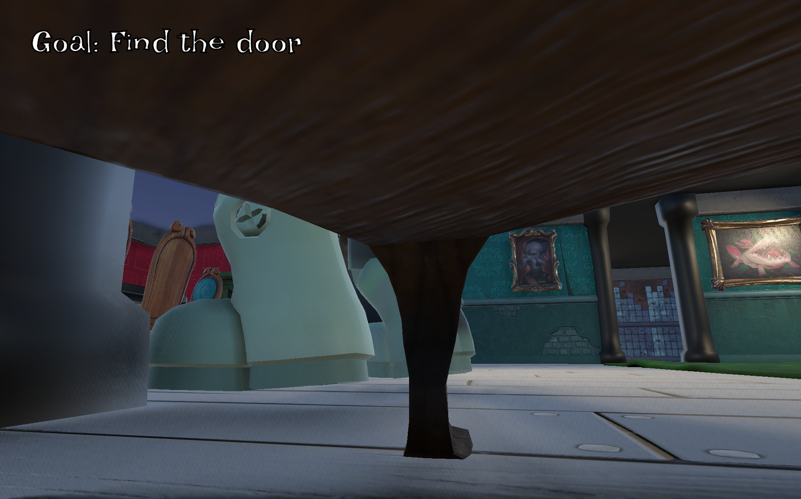
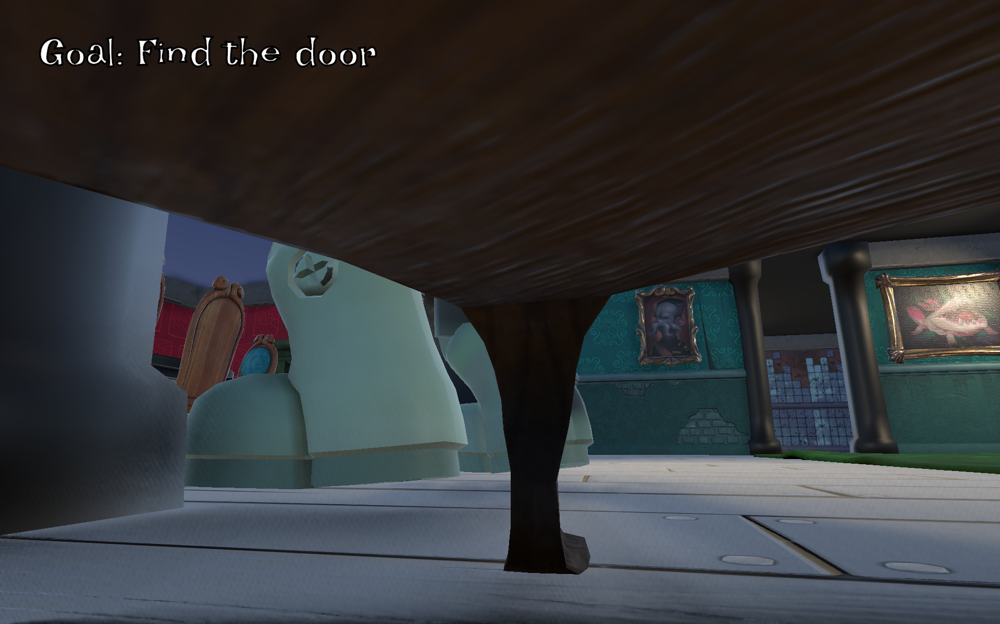

About Me
Hello! I'm Devin, a senior at Northern Arizona University majoring in Computer Science. I'm passionate about becoming a full-time software engineer and have been building my skills through a variety of projects.
The "games" above represent work I've done over the years — some are programming projects, others are actual games. Right now, I'm developing a video game in Unity, exploring gameplay programming, art design, and even creative writing.
I'm always looking for ways to grow as a developer and bring creative ideas to life through code.
Skills & Technologies
Each of these skills has been applied and practiced through hands-on project work.
- C
- C#
- Python
- PHP
- SQL
- JavaScript
- HTML
- CSS
- CUDA
Programming Languages
- Unity
- Git
- Linux
- Selenium
- PHPUnit
- Godot
- Blender
Tools & Technologies
Education
BS, Computer Science
Northern Arizona University (NAU)
Flagstaff, AZ
3.89 GPA
Relevent Coursework
Data Structures, Software Engineering, Web Programming, Aritifial Intelligence, and Database Systems
Experience
-
PhenoCam, Research Assistant
I managed the webpage to ensure everything is uptodate and functional. Additionally, I managed a linux file system to ensure project data is stored properly and safely.
Fall 2024 - Present -
Student Led Research, Northern Arizona University
I conducted several interviews with pediatric physical/occupational therapists on game-based intervention methods. I also designed a custom health-focused game based off of the acquired research. Our research was also awarded Hooper Undergraduate Research Award
Spring 2024 - Present -
Grader, Northern Arizona University
I reviewed C programming assignments for an undergraduate Computer Science course while providing clear, constructive feedback.
Fall 2023
Ex-traterrestrial
 


I had the pleasure of participating in the Arizona Game Jam 2025 alongside 4 other students as representatives of Northern Arizona University — and we won. Our team had 24 hours to create a game based on the theme "Creepy," and we thought, "What's the creepiest thing we can think of — men!" So, we created Ex-traterrestrial! Play as a man trying to save his girlfriend. Explore her apartment while avoiding the alien in a desperate attempt to save the love of your life. As you play, you'll find that everything is not as it seems, and maybe, there are creepier things than giant green aliens!
My primary responsibility was developing the AI for the alien that stalks you around the house, making sure it chases you if it sees you or hears you, and patrols the house when it doesn't. I also assisted in the integration of our many features, making sure everything worked as we all intended.
This was an incredible experience: I met so many new people who also shared my love for game development, and I learned a lot about working in a team under a tight deadline. Play Ex-traterrestrial now, and discover the true meaning of creepy!
Skills & Tech
Programming languages
- C#
Technologies
- Unity
- Git & GitHub
Dying For You
Dying For You is a 2-D side-scrolling platformer submitted to the Jamsepticeye Game Jam 2025 in which I had 5 days to create a polished game. The theme of the jam was "Death is an Opportunity!" Play as a depressed stick figure who, after losing their partner, has nothing to live for. When they try to kill themselves, they find that they cannot die! You must use your new found abilities to save the lives of others, which inspired the title — Dying For You. I had a lot of fun working on this game, spending most of the time hand drawing the characters and backgrounds and also animating everything using Toonsquid. I also programmed the entirety of the game mechanics in Unity. Balancing developing this game as well as class work was tough, but I am proud of what I was able to accomplish in such a short time frame. Play Dying For You now! And remember — sometimes to save yourself, you have to save others.
Skills & Tech
Programming languages
- C#
Technologies
- Unity
- Git & GitHub
- Toonsquid
VicM
VicM is a 2-D dungeon crawler where you play as, you guessed it — VicM, the tofu boy. You must enter into the dungeon to fight off the SoggyFry and the BurgerBoss, the king of the junk foods. I had the pleasure of working with 5 other people to bring VicM to life for a video game design class. I was responsible for creating several game mechanics, including the chopstick and soy sauce attacks. I also programmed and animated all of the enemies and VicM himself, making sure each attack (from both player and enemy) felt fun and impactful.
Skills & Tech
Programming languages
- C#
Technologies
- Unity
- Git & GitHub
Bubble Buzzer Beater
Bubble Buzzer Beater was created for the annual Global Game Jam 2025. Three other game designers and I spent 48 hours creating a game that had to do with the year's topic of bubbles. The game consists of many mini games that the player has to complete. I spent my time creating a bubble blowing mini game in which the player has to "blow" into their mic to create a bubble. I also made a jump scare minigame that takes your picture when it scares you and displays that picture at the end of the game. It was fun to (quickly) learn how to implement both microphone and camera features. My team and I ran into many complications during the 48 hours, but we worked together to make sure everyone was able to do what they set out to do.
Skills & Tech
Programming languages
- C#
Technologies
- Unity
- Git & GitHub
Chomp Champs
Chomp Champs is a turn-based mobile game developed for the CHI 2025 Student Game Design Competition. Its goal is to promote healthy eating habits among children by allowing them to take pictures of the foods they eat. The game then transforms the nutritional information into combat stats. Players battle their foods in-game to earn rewards; Healthier foods provide better rewards, encouraging smarter food choices. In a team of 4, I was responsible for incorporating the camera mechanics, letting players take a picture of a food that is then processed into an enemy.
Skills & Tech
Programming languages
- C#
Technologies
- Unity
- Git & GitHub
RNT-A-ROOM
RNT-A-ROOM is an Airbnb-like website that caters towards travel nurses. In a team of 4, we worked to create a way for travel nurses to book housing for their specific needs. My role was to work on the backend of the website: using PHP to create a login system for both travel nurses and homeowners, using classes to manage the different user types and housing options, and managing the JawsDB database to make sure data is stored efficiently and that houses can actually be booked. I also worked on the frontend side whenever help was needed. It was fun to learn backend web development in such a short time span and to also work in a team in a software engineering environment.
Skills & Tech
Programming languages
- HTML
- CSS
- JavaScript
- PHP
- SQL
Technologies
- Heroku
- Git & GitHub
- phpMyAdmin
Kingdom of Influence (WIP)
Kingdom of Influence is a role-playing game designed to support adults with autism who face challenges in social situations. Players create and customize their own character, explore a vibrant town, and engage in interactive scenarios that teach them how to recognize and interpret facial expressions and social cues. The goal is to help players develop practical social skills they can apply in real-life interactions. The images above showcase the demo we created using Godot. Our next step is to develop the full game in Unreal Engine 4. My contributions so far include building the quest system, which allows players to interact with NPCs and the environment. I also animated several animals in Blender, adding life and personality to the game world.
Skills & Tech
Programming languages
- GDScript
Technologies
- Godot
- Git & GitHub
- Blender
Operating System Simulation
The Github link is available upon request.
I created a program that simulates the operations of a Unix-like OS kernel. I utilized several data structures, such as queues and linked lists, to implement features such as process scheduling, memory management, and inter-process communication. Additionally, I used POSIX threads to simulate process execution concurrency. This project was done in four stages, which required excellent planning skills to make sure each step was ready for the next set of features.
Skills & Tech
Programming languages
- C
Technologies
- Git & GitHub
Email Spam Classification
GitHubUsing a training dataset found online, I created a program that uses 3 different machine learning models to classify whether an email should be considered spam or not spam. The 3 models were Naïve Bayes, Logistic Regression, and K-Nearest-Neighbor. I then analyzed the results from each and compared their accuracies and performance.
Skills & Tech
Programming languages
- Python
Technologies
- Git & GitHub